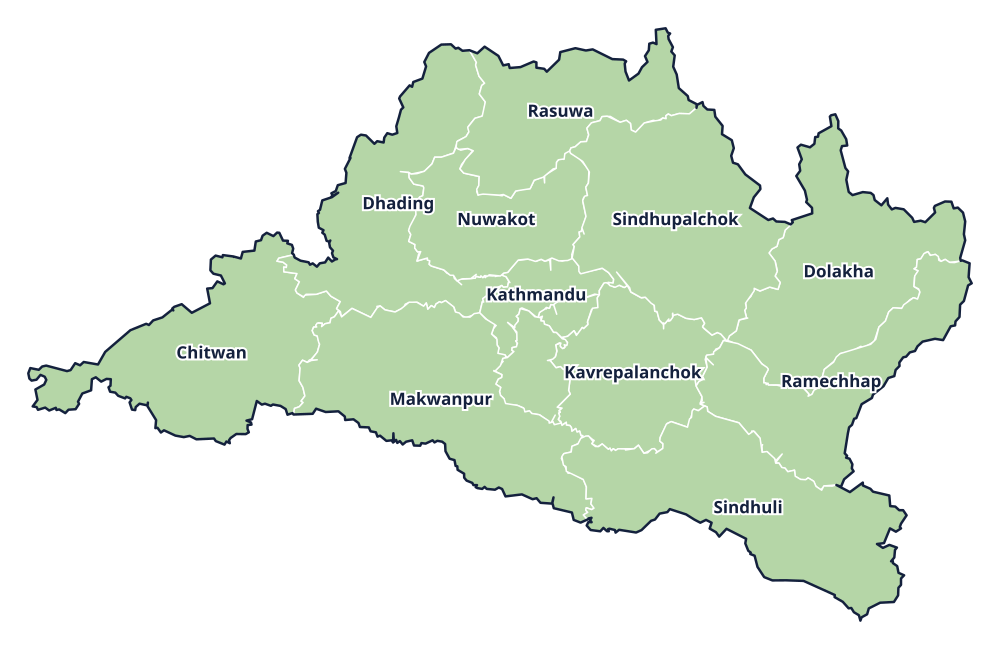

Province 3 · प्रदेश 3
Bagmati Province
बागमती प्रदेश

Provincial information
Capital: Hetauda (हेटौंडा)
Districts: 13
District directory
Select a district to view its profile, find news coverage, and browse local links.
Province 3 · प्रदेश 3
बागमती प्रदेश

Capital: Hetauda (हेटौंडा)
Districts: 13
Select a district to view its profile, find news coverage, and browse local links.